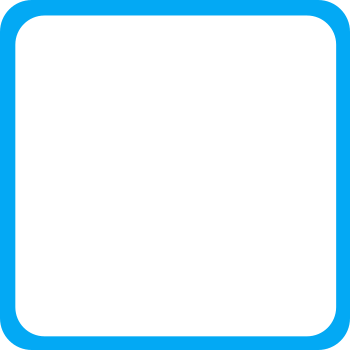
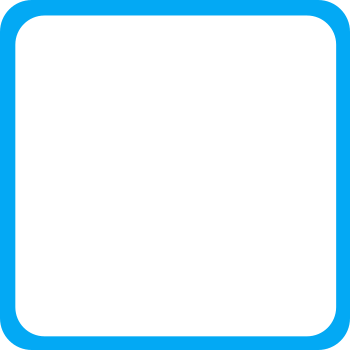

ABOUT
Soy un profesional de la computación con experiencia en docencia, atención al cliente e inclusión. Apasionado por las tecnologías web, actualmente me especializo en desarrollo Front-end, combinando mi conocimiento técnico con un enfoque centrado en el usuario para crear experiencias digitales accesibles y de alta calidad.